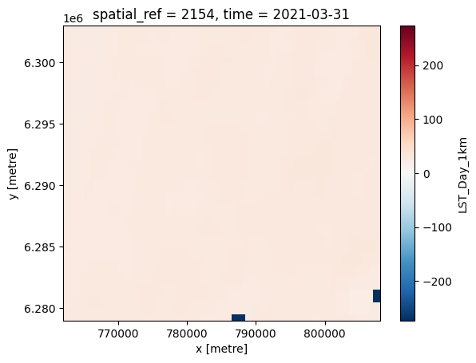

Temporal variability of climate time Series using MODIS satellite data
Introduction
The colab is avaiable here
Install planetary_computer and import other libraries
# Install libraries
!pip install planetary_computer
!pip install odc-stac
!pip install osmnx
!pip install rioxarray
!pip install zarr
!pip install geojson
# Import libraries
from urllib.parse import urlparse
from pystac.extensions.eo import EOExtension as eo
import matplotlib.pyplot as plt
import planetary_computer
import pystac
import pystac_client
import odc.stac
import rich.table
import osmnx as ox
import folium
import numpy as np
import rioxarray
import rasterio
import xarray as xr
import zarr
import os
Use pystac to import a stac catalog from microsoft planetary computer
catalog = pystac_client.Client.open(
"https://planetarycomputer.microsoft.com/api/stac/v1",
modifier=planetary_computer.sign_inplace,
)
Choose an area, time of interest and dataset from planetary computer
bbox = [3.771744,43.610725,4.335823,43.814463] # 738785.0528,6274273.2065,779106.8653,6298491.2641
year = "2021"
months = {
"January": "01",
"February": "02",
"March": "03",
"April": "04",
"May": "05",
"June": "06",
"July": "07",
"August": "08",
"September": "09",
"October": "10",
"november": "11",
"December": "12",
}
items = dict()
# Fetch the collection of interest and print available items
for name, number in months.items():
datetime = f"{year}-{number}"
search = catalog.search(
collections=["modis-11A1-061"],
bbox=bbox,
datetime=datetime,
)
items[name] = search.item_collection()[0]
print(items)
print(len(items))
{'January': <Item id=MYD11A1.A2021031.h18v04.061.2021041154946>, 'February': <Item id=MYD11A1.A2021059.h18v04.061.2021062101022>, 'March': <Item id=MYD11A1.A2021090.h18v04.061.2021092202346>, 'April': <Item id=MYD11A1.A2021120.h18v04.061.2021122015755>, 'May': <Item id=MYD11A1.A2021151.h18v04.061.2021152213240>, 'June': <Item id=MYD11A1.A2021181.h18v04.061.2021183192128>, 'July': <Item id=MYD11A1.A2021212.h18v04.061.2021213191344>, 'August': <Item id=MYD11A1.A2021243.h18v04.061.2021244183922>, 'September': <Item id=MYD11A1.A2021273.h18v04.061.2021277221831>, 'October': <Item id=MYD11A1.A2021304.h18v04.061.2021306213324>, 'november': <Item id=MYD11A1.A2021334.h18v04.061.2021335171453>, 'December': <Item id=MYD11A1.A2021365.h18v04.061.2022004015033>}
12
Choose the right asset
Each item has several available assets, including the original HDF file and a Cloud-optimized GeoTIFF of each subdataset. In our case, our interest is the ` LST_Day_1km` asset, that corresponds to the temperature mesured during daytime
rich_table = rich.table.Table("Key", "Title")
for key, asset in items["March"].assets.items():
rich_table.add_row(key, asset.title)
rich_table
┏━━━━━━━━━━━━━━━━━━┳━━━━━━━━━━━━━━━━━━━━━━━━━━━━━━━━━━━━━━━━━━━━━━━━━━━━━━━━━━━━━━━━━━━━━┓ ┃ Key ┃ Title ┃ ┡━━━━━━━━━━━━━━━━━━╇━━━━━━━━━━━━━━━━━━━━━━━━━━━━━━━━━━━━━━━━━━━━━━━━━━━━━━━━━━━━━━━━━━━━━┩ │ hdf │ Source data containing all bands │ │ QC_Day │ Quality control for daytime LST and emissivity │ │ Emis_31 │ Band 31 emissivity │ │ Emis_32 │ Band 32 emissivity │ │ QC_Night │ Quality control for nighttime LST and emissivity │ │ metadata │ Federal Geographic Data Committee (FGDC) Metadata │ │ LST_Day_1km │ Daily daytime 1km grid Land-surface Temperature │ │ Clear_day_cov │ Day clear-sky coverage │ │ Day_view_angl │ View zenith angle of daytime Landsurface Temperature │ │ Day_view_time │ (local solar) Time of daytime Land-surface Temperature observation │ │ LST_Night_1km │ Daily nighttime 1km grid Land-surface Temperature │ │ Clear_night_cov │ Night clear-sky coverage │ │ Night_view_angl │ View zenith angle of nighttime Landsurface Temperature │ │ Night_view_time │ (local solar) Time of nighttime Landsurface Temperature observation │ │ tilejson │ TileJSON with default rendering │ │ rendered_preview │ Rendered preview │ └──────────────────┴─────────────────────────────────────────────────────────────────────┘
The MODIS coordinate reference system is a sinusoidal grid, which means that views in a naïve XY raster look skewed. For visualization purposes, we reproject to a spherical Mercator projection for intuitive, north-up visualization.
data = odc.stac.load(
items.values(),
crs="EPSG:2154",
bands="LST_Day_1km",
resolution=500,
bbox=bbox,
)
# Get data data of July as a sample
raster = items["July"].assets["LST_Day_1km"].extra_fields["raster:bands"]
# Use raster scale to redefine temperature in celsius
data = (data["LST_Day_1km"] * raster[0]["scale"]) - 273.15
data
<xarray.DataArray 'LST_Day_1km' (time: 12, y: 48, x: 92)>
array([[[-273.15, -273.15, -273.15, ..., 16.55, 16.71, 16.71],
[-273.15, -273.15, -273.15, ..., 16.55, 16.71, 16.71],
[-273.15, -273.15, -273.15, ..., 16.73, 16.69, 16.69],
...,
[ 15.51, 15.21, 15.21, ..., 11.71, 11.35, 11.35],
[ 15.47, 15.55, 15.55, ..., 11.71, 11.35, 11.35],
[ 15.47, 15.55, 15.55, ..., 13.47, 14.21, 14.21]],
[[-273.15, -273.15, -273.15, ..., -273.15, -273.15, -273.15],
[-273.15, -273.15, -273.15, ..., -273.15, -273.15, -273.15],
[-273.15, -273.15, -273.15, ..., -273.15, 20.53, 20.53],
...,
[ 16.67, 17.83, 17.83, ..., 13.59, 14.23, 14.23],
[-273.15, 17.83, 17.83, ..., 13.59, 14.23, 14.23],
[-273.15, 17.83, 17.83, ..., 15.63, 15.97, 15.97]],
[[ 23.83, 23.27, 23.27, ..., 31.33, 31.65, 31.65],
[ 24.17, 23.93, 23.93, ..., 31.33, 31.65, 31.65],
[ 24.17, 23.93, 23.93, ..., 31.13, 30.55, 30.55],
...,
...
...,
[-273.15, -273.15, -273.15, ..., -273.15, -273.15, -273.15],
[-273.15, -273.15, -273.15, ..., -273.15, -273.15, -273.15],
[-273.15, -273.15, -273.15, ..., -273.15, -273.15, -273.15]],
[[ 8.65, 8.65, 8.65, ..., 9.33, 9.35, 9.35],
[ 8.63, 8.63, 8.63, ..., 9.33, 9.35, 9.35],
[ 8.63, 8.63, 8.63, ..., 9.55, 9.47, 9.47],
...,
[ 10.17, 10.23, 10.23, ..., 6.01, 6.09, 6.09],
[ 10.21, 10.17, 10.17, ..., 6.01, 6.09, 6.09],
[ 10.21, 10.17, 10.17, ..., 6.91, 7.67, 7.67]],
[[ 16.45, 16.07, 16.07, ..., -273.15, -273.15, -273.15],
[ 16.59, 16.17, 16.17, ..., -273.15, -273.15, -273.15],
[ 16.59, 16.17, 16.17, ..., -273.15, -273.15, -273.15],
...,
[ 16.65, 16.99, 16.99, ..., -273.15, -273.15, -273.15],
[ 16.63, 16.79, 16.79, ..., -273.15, -273.15, -273.15],
[ 16.63, 16.79, 16.79, ..., -273.15, -273.15, -273.15]]])
Coordinates:
* y (y) float64 6.303e+06 6.302e+06 ... 6.28e+06 6.279e+06
* x (x) float64 7.622e+05 7.628e+05 ... 8.072e+05 8.078e+05
spatial_ref int32 2154
* time (time) datetime64[ns] 2021-01-31 2021-02-28 ... 2021-12-31Interpolate data and fill missing values
There are many nodata values. Lets interpolate missing values using rioxarray. But me must first define our nodata value. In this case, we can define as -273.15, since Modis defines nodata value as 0
data_with_nodata = data.rio.write_nodata(-273.15, inplace=True)
print(f'No data value is {data_with_nodata.rio.nodata}')
No data value is -273.15
We plot the month of mars
data_with_nodata[2].plot()
<matplotlib.collections.QuadMesh at 0x798254418730>

With the nodata defined, we can interpolate na’s using the nearest neighbour method and fill missing data
# Interpolate missing values
data_interpolated=data_with_nodata.rio.interpolate_na(method='nearest')
# Plot march again
data_interpolated[2].plot()
<matplotlib.collections.QuadMesh at 0x798254a2e380>
Plot all the months together
g = data_interpolated.plot.imshow(cmap="Spectral_r", col="time", vmin=-10, vmax=60, size=4,col_wrap=4)
datetimes = data.time.to_pandas().dt.strftime("%B")
for ax, datetime in zip(g.axes.flat, datetimes):
ax.set_title(datetime)
<ipython-input-39-d1854156f2f9>:4: DeprecationWarning: self.axes is deprecated since 2022.11 in order to align with matplotlibs plt.subplots, use self.axs instead.
for ax, datetime in zip(g.axes.flat, datetimes):
Plot images with folium
Create bbox with Fiona
import fiona
import rasterio
import rasterio.mask
import json
import geojson
from fiona.crs import from_epsg
from shapely.geometry import mapping
import json
import requests
response = requests.get('http://app3.ouicodedata.com/collections/agropolis-zone/items')
with open('./response.json', 'w') as outfile:
json.dump(response.json(), outfile)
# Load JSON data from a file
with open('./response.json','r') as infile:
with open('./agropoilis_zone.geojson', 'w') as outfile:
data = json.load(infile)
geojson.dump(data,outfile)
with fiona.open("./agropoilis_zone.geojson", "r",crs=from_epsg(2154)) as geojson:
shapes = [feature["geometry"] for feature in geojson]
print(from_epsg(2154))
EPSG:2154
import os
from rasterio import windows
import random
from rasterio import features
from rasterio import warp
from rasterio.windows import get_data_window
import rasterio.mask
for i,d in enumerate(data_interpolated,start=1):
if not os.path.exists('temp'): os.makedirs('temp')
temp_file_name = '_'.join(['./temp/modis_tile',list(months.values())[i-1],'.tiff'])
d.rio.to_raster(temp_file_name)
with rasterio.open(temp_file_name) as src:
out_image, out_transform = rasterio.mask.mask(src, shapes, crop=True)
out_meta = src.meta
out_meta.update({"driver": "GTiff",
"height": out_image.shape[1],
"width": out_image.shape[2],
"transform": out_transform})
if not os.path.exists('cropped'): os.makedirs('cropped')
croped_file_name = '_'.join(['./cropped/cropped_modis_tile',list(months.values())[i-1],'.tiff'])
with rasterio.open(croped_file_name, "w", **out_meta) as dest:
dest.write(out_image)
Export images and plot then together with Folium
from pyproj import Transformer
f = folium.Figure(width=700, height=500)
m = folium.Map(location=(43.7237837,4.0003508)).add_to(f)
from rasterio.windows import Window
for i,d in enumerate(data,start=1):
temp_file_name = '_'.join(['./temp/modis_tile',list(months.values())[i-1],'.tiff'])
dst_crs = 'EPSG:4326'
with rasterio.open(temp_file_name) as src:
img = src.read()
src_crs = src.crs['init'].upper()
min_lon, min_lat, max_lon, max_lat = src.bounds
## Conversion from UTM to WGS84 CRS
bounds_orig = [[min_lat, min_lon], [max_lat, max_lon]]
bounds_fin = []
for item in bounds_orig:
#converting to lat/lon
lat = item[0]
lon = item[1]
proj = Transformer.from_crs(int(src_crs.split(":")[1]), int(dst_crs.split(":")[1]), always_xy=True)
lon_n, lat_n = proj.transform(lon, lat)
bounds_fin.append([lat_n, lon_n])
# Finding the centre latitude & longitude
centre_lon = bounds_fin[0][1] + (bounds_fin[1][1] - bounds_fin[0][1])/2
centre_lat = bounds_fin[0][0] + (bounds_fin[1][0] - bounds_fin[0][0])/2
layer = folium.raster_layers.ImageOverlay(
image = img.transpose(1, 2, 0),
name=list(months.keys())[i-1], # add a name to the layer
bounds = bounds_fin,
opacity=0.7,
interactive=False,
cross_origin=False,
zindex=1,
)
# Overlay the image
m.add_child(layer)
folium.LayerControl().add_to(m)
m
<iframe srcdoc=”<!DOCTYPE html> <html> <head>
<meta http-equiv="content-type" content="text/html; charset=UTF-8" />
<script>
L_NO_TOUCH = false;
L_DISABLE_3D = false;
</script>
<style>html, body {width: 100%;height: 100%;margin: 0;padding: 0;}</style>
<style>#map {position:absolute;top:0;bottom:0;right:0;left:0;}</style>
<script src="https://cdn.jsdelivr.net/npm/leaflet@1.9.3/dist/leaflet.js"></script>
<script src="https://code.jquery.com/jquery-1.12.4.min.js"></script>
<script src="https://cdn.jsdelivr.net/npm/bootstrap@5.2.2/dist/js/bootstrap.bundle.min.js"></script>
<script src="https://cdnjs.cloudflare.com/ajax/libs/Leaflet.awesome-markers/2.0.2/leaflet.awesome-markers.js"></script>
<link rel="stylesheet" href="https://cdn.jsdelivr.net/npm/leaflet@1.9.3/dist/leaflet.css"/>
<link rel="stylesheet" href="https://cdn.jsdelivr.net/npm/bootstrap@5.2.2/dist/css/bootstrap.min.css"/>
<link rel="stylesheet" href="https://netdna.bootstrapcdn.com/bootstrap/3.0.0/css/bootstrap.min.css"/>
<link rel="stylesheet" href="https://cdn.jsdelivr.net/npm/@fortawesome/fontawesome-free@6.2.0/css/all.min.css"/>
<link rel="stylesheet" href="https://cdnjs.cloudflare.com/ajax/libs/Leaflet.awesome-markers/2.0.2/leaflet.awesome-markers.css"/>
<link rel="stylesheet" href="https://cdn.jsdelivr.net/gh/python-visualization/folium/folium/templates/leaflet.awesome.rotate.min.css"/>
<meta name="viewport" content="width=device-width,
initial-scale=1.0, maximum-scale=1.0, user-scalable=no" />
<style>
#map_c411caddeadbebf70f7cebfd52330cd5 {
position: relative;
width: 100.0%;
height: 100.0%;
left: 0.0%;
top: 0.0%;
}
.leaflet-container { font-size: 1rem; }
</style>
<style>
.leaflet-image-layer {
/* old android/safari*/
image-rendering: -webkit-optimize-contrast;
image-rendering: crisp-edges; /* safari */
image-rendering: pixelated; /* chrome */
image-rendering: -moz-crisp-edges; /* firefox */
image-rendering: -o-crisp-edges; /* opera */
-ms-interpolation-mode: nearest-neighbor; /* ie */
}
</style>
</head> <body>
<div class="folium-map" id="map_c411caddeadbebf70f7cebfd52330cd5" ></div>
</body> <script>
var map_c411caddeadbebf70f7cebfd52330cd5 = L.map(
"map_c411caddeadbebf70f7cebfd52330cd5",
{
center: [43.7237837, 4.0003508],
crs: L.CRS.EPSG3857,
zoom: 10,
zoomControl: true,
preferCanvas: false,
}
);
var tile_layer_8ebb7bdf73674872bc467e44a609f99a = L.tileLayer(
"https://{s}.tile.openstreetmap.org/{z}/{x}/{y}.png",
{"attribution": "Data by \u0026copy; \u003ca target=\"_blank\" href=\"http://openstreetmap.org\"\u003eOpenStreetMap\u003c/a\u003e, under \u003ca target=\"_blank\" href=\"http://www.openstreetmap.org/copyright\"\u003eODbL\u003c/a\u003e.", "detectRetina": false, "maxNativeZoom": 18, "maxZoom": 18, "minZoom": 0, "noWrap": false, "opacity": 1, "subdomains": "abc", "tms": false}
).addTo(map_c411caddeadbebf70f7cebfd52330cd5);
var image_overlay_06ec3d8b1ee2472e0dee5d2551cc2776 = L.imageOverlay(
"",
[[43.60734015888762, 3.767730367838], [43.81775157192726, 4.3423021816889245]],
{"crossOrigin": false, "interactive": false, "opacity": 0.7, "zindex": 1}
).addTo(map_c411caddeadbebf70f7cebfd52330cd5);
var image_overlay_a89a77ffe85cc350b6d5e694476e9cb5 = L.imageOverlay(
"",
[[43.60734015888762, 3.767730367838], [43.81775157192726, 4.3423021816889245]],
{"crossOrigin": false, "interactive": false, "opacity": 0.7, "zindex": 1}
).addTo(map_c411caddeadbebf70f7cebfd52330cd5);
var image_overlay_9be1b876fc220c2b22bc75a44a970ca5 = L.imageOverlay(
"",
[[43.60734015888762, 3.767730367838], [43.81775157192726, 4.3423021816889245]],
{"crossOrigin": false, "interactive": false, "opacity": 0.7, "zindex": 1}
).addTo(map_c411caddeadbebf70f7cebfd52330cd5);
var image_overlay_d1707f042f199bc480911a410925d0ed = L.imageOverlay(
"",
[[43.60734015888762, 3.767730367838], [43.81775157192726, 4.3423021816889245]],
{"crossOrigin": false, "interactive": false, "opacity": 0.7, "zindex": 1}
).addTo(map_c411caddeadbebf70f7cebfd52330cd5);
var image_overlay_047cf7a4389ddf495e7be954fc800a97 = L.imageOverlay(
"",
[[43.60734015888762, 3.767730367838], [43.81775157192726, 4.3423021816889245]],
{"crossOrigin": false, "interactive": false, "opacity": 0.7, "zindex": 1}
).addTo(map_c411caddeadbebf70f7cebfd52330cd5);
var image_overlay_35a70477cdb1aec56ce558f46abbb54b = L.imageOverlay(
"",
[[43.60734015888762, 3.767730367838], [43.81775157192726, 4.3423021816889245]],
{"crossOrigin": false, "interactive": false, "opacity": 0.7, "zindex": 1}
).addTo(map_c411caddeadbebf70f7cebfd52330cd5);
var image_overlay_aa3f48d500ceccff387b5b78900cb83f = L.imageOverlay(
"",
[[43.60734015888762, 3.767730367838], [43.81775157192726, 4.3423021816889245]],
{"crossOrigin": false, "interactive": false, "opacity": 0.7, "zindex": 1}
).addTo(map_c411caddeadbebf70f7cebfd52330cd5);
var image_overlay_6610ffc3843fc286b5f922d0ff999b64 = L.imageOverlay(
"",
[[43.60734015888762, 3.767730367838], [43.81775157192726, 4.3423021816889245]],
{"crossOrigin": false, "interactive": false, "opacity": 0.7, "zindex": 1}
).addTo(map_c411caddeadbebf70f7cebfd52330cd5);
var image_overlay_ba0f0d14f5a326f6d0321ceb4226f921 = L.imageOverlay(
"",
[[43.60734015888762, 3.767730367838], [43.81775157192726, 4.3423021816889245]],
{"crossOrigin": false, "interactive": false, "opacity": 0.7, "zindex": 1}
).addTo(map_c411caddeadbebf70f7cebfd52330cd5);
var layer_control_16772d432ce6954add8c65224c2554ae = {
base_layers : {
"openstreetmap" : tile_layer_8ebb7bdf73674872bc467e44a609f99a,
},
overlays : {
"January" : image_overlay_06ec3d8b1ee2472e0dee5d2551cc2776,
"February" : image_overlay_a89a77ffe85cc350b6d5e694476e9cb5,
"March" : image_overlay_9be1b876fc220c2b22bc75a44a970ca5,
"April" : image_overlay_d1707f042f199bc480911a410925d0ed,
"May" : image_overlay_047cf7a4389ddf495e7be954fc800a97,
"June" : image_overlay_35a70477cdb1aec56ce558f46abbb54b,
"July" : image_overlay_aa3f48d500ceccff387b5b78900cb83f,
"August" : image_overlay_6610ffc3843fc286b5f922d0ff999b64,
"September" : image_overlay_ba0f0d14f5a326f6d0321ceb4226f921,
},
};
L.control.layers(
layer_control_16772d432ce6954add8c65224c2554ae.base_layers,
layer_control_16772d432ce6954add8c65224c2554ae.overlays,
{"autoZIndex": true, "collapsed": true, "position": "topright"}
).addTo(map_c411caddeadbebf70f7cebfd52330cd5);
</script> </html>” width=”700” height=”500”style=”border:none !important;” “allowfullscreen” “webkitallowfullscreen” “mozallowfullscreen”></iframe>
Plot temporal series for the data
We calculate the mean temperature per month
data_interpolated
<xarray.DataArray 'LST_Day_1km' (time: 12, y: 48, x: 92)>
array([[[ 9.69, 9.69, 9.69, ..., 16.55, 16.71, 16.71],
[ 9.69, 9.69, 9.69, ..., 16.55, 16.71, 16.71],
[ 9.69, 9.69, 9.69, ..., 16.73, 16.69, 16.69],
...,
[ 15.51, 15.21, 15.21, ..., 11.71, 11.35, 11.35],
[ 15.47, 15.55, 15.55, ..., 11.71, 11.35, 11.35],
[ 15.47, 15.55, 15.55, ..., 13.47, 14.21, 14.21]],
[[ 12.93, 12.93, 12.93, ..., 17.77, 20.53, 20.53],
[ 12.93, 12.93, 12.93, ..., 20.53, 20.53, 20.53],
[ 12.93, 12.93, 12.93, ..., 20.53, 20.53, 20.53],
...,
[ 16.67, 17.83, 17.83, ..., 13.59, 14.23, 14.23],
[ 17.83, 17.83, 17.83, ..., 13.59, 14.23, 14.23],
[ 17.83, 17.83, 17.83, ..., 15.63, 15.97, 15.97]],
[[ 23.83, 23.27, 23.27, ..., 31.33, 31.65, 31.65],
[ 24.17, 23.93, 23.93, ..., 31.33, 31.65, 31.65],
[ 24.17, 23.93, 23.93, ..., 31.13, 30.55, 30.55],
...,
...
...,
[-273.15, -273.15, -273.15, ..., -273.15, -273.15, -273.15],
[-273.15, -273.15, -273.15, ..., -273.15, -273.15, -273.15],
[-273.15, -273.15, -273.15, ..., -273.15, -273.15, -273.15]],
[[ 8.65, 8.65, 8.65, ..., 9.33, 9.35, 9.35],
[ 8.63, 8.63, 8.63, ..., 9.33, 9.35, 9.35],
[ 8.63, 8.63, 8.63, ..., 9.55, 9.47, 9.47],
...,
[ 10.17, 10.23, 10.23, ..., 6.01, 6.09, 6.09],
[ 10.21, 10.17, 10.17, ..., 6.01, 6.09, 6.09],
[ 10.21, 10.17, 10.17, ..., 6.91, 7.67, 7.67]],
[[ 16.45, 16.07, 16.07, ..., 13.49, 13.49, 13.49],
[ 16.59, 16.17, 16.17, ..., 13.49, 13.49, 13.49],
[ 16.59, 16.17, 16.17, ..., 13.49, 13.49, 13.49],
...,
[ 16.65, 16.99, 16.99, ..., 12.91, 12.91, 12.91],
[ 16.63, 16.79, 16.79, ..., 12.91, 12.91, 12.91],
[ 16.63, 16.79, 16.79, ..., 12.91, 12.91, 12.91]]])
Coordinates:
* y (y) float64 6.303e+06 6.302e+06 ... 6.28e+06 6.279e+06
* x (x) float64 7.622e+05 7.628e+05 ... 8.072e+05 8.078e+05
* time (time) datetime64[ns] 2021-01-31 2021-02-28 ... 2021-12-31
spatial_ref int64 0
Attributes:
_FillValue: -273.15To plot temporal series of the temperature, we must calculate the averaage of temperatures per month in each raster. However, we need to deal with the nodata values first, since a high negative value can influence the mean value.
# Remove data where we have absolute kelvin -273.15. This will add np.nan where temperatures are -273.15
data_with_nan = [data_month.data for data_month in data_interpolated.where(data != -273.15)]
# Remove np.nan values
data_without_nan = [data_month[~np.isnan(data_month)] for data_month in data_with_nan]
# Calculate the mean with the present values
data_temp_mean = [np.nanmean(month_data) for month_data in data_without_nan ]
data_temp_mean
[11.963057065217424,
16.11516304347829,
26.789483695652205,
19.04933423913047,
29.070221920289885,
33.015901268115975,
39.149814311594234,
35.1516077898551,
19.180919384058,
-273.1500000000001,
9.299877717391333,
14.698691123188437]
The month of October has nodata values only. Lets replace it by the average of the temperatures of September and November
data_temp_mean[9] = np.mean( np.array([ data_temp_mean[8], data_temp_mean[10] ]), axis=0 )
data_temp_mean
[11.963057065217424,
16.11516304347829,
26.789483695652205,
19.04933423913047,
29.070221920289885,
33.015901268115975,
39.149814311594234,
35.1516077898551,
19.180919384058,
14.240398550724667,
9.299877717391333,
14.698691123188437]
We create a dataframe with the columns temperature and month
import pandas as pd
df_temp = pd.DataFrame({'month': list(months.keys()), 'temperature':data_temp_mean})
df_temp
| month | temperature | |
|---|---|---|
| 0 | January | 11.963057 |
| 1 | February | 16.115163 |
| 2 | March | 26.789484 |
| 3 | April | 19.049334 |
| 4 | May | 29.070222 |
| 5 | June | 33.015901 |
| 6 | July | 39.149814 |
| 7 | August | 35.151608 |
| 8 | September | 19.180919 |
| 9 | October | 14.240399 |
| 10 | november | 9.299878 |
| 11 | December | 14.698691 |
Plot data with seaborn
import seaborn as sns
sns.set_theme(rc={'figure.figsize':(8.7,7.27)})
sns.lineplot(x="month", y="temperature", data=df_temp)
plt.xticks(rotation=15)
plt.title(f'Montpellier verage temp in {year}')
plt.show()
Make a animation from the output raster
Create folders
print("Current Working Directory " , os.getcwd())
import matplotlib.pyplot as pyplot
in_dir = os.getcwd() + '/temp'
os.chdir(in_dir)
print("Input Directory " , in_dir)
Current Working Directory /content
Input Directory /content/temp
out_dir = os.getcwd() + '/animation/'
print("Animation out dir",out_dir)
if not os.path.exists(out_dir): os.makedirs(out_dir)
file_list = [file for file in os.listdir() if file.endswith('.tiff')]
print(os.listdir())
Animation out dir /content/temp/animation/
['modis_tile_10_.tiff', 'modis_tile_02_.tiff', 'modis_tile_03_.tiff', 'modis_tile_12_.tiff', 'modis_tile_05_.tiff', 'modis_tile_06_.tiff', 'modis_tile_11_.tiff', 'modis_tile_08_.tiff', 'animation', 'modis_tile_09_.tiff', 'modis_tile_04_.tiff', 'modis_tile_01_.tiff', 'modis_tile_07_.tiff']
for f in file_list:
raw_file = rasterio.open(f)
file = raw_file.read(1)
cmap='turbo'
plt.figure(figsize=(12,15))
plt.imshow(file,cmap=cmap,vmin=0,vmax=60)
parts = f.split("_")
file_name = parts[2]
print(f'Processing: {file_name}')
plt.title(f"Temperature {file_name}", fontsize=28,fontweight='bold')
cur_axes = plt.gca()
cur_axes.axes.get_xaxis().set_visible(False)
cur_axes.axes.get_yaxis().set_visible(False)
cb = plt.colorbar(fraction=0.046, pad=0.04,shrink=0.3)
cb.set_label('Temperature time series', size=24)
cb.ax.tick_params(labelsize=18)
plt.tight_layout()
print(out_dir)
plt.savefig('{}{}_temperature.png'.format(out_dir,file_name,dpi=150))
plt.close()
Processing: 10
/content/temp/animation/
Processing: 02
/content/temp/animation/
Processing: 03
/content/temp/animation/
Processing: 12
/content/temp/animation/
Processing: 05
/content/temp/animation/
Processing: 06
/content/temp/animation/
Processing: 11
/content/temp/animation/
Processing: 08
/content/temp/animation/
Processing: 09
/content/temp/animation/
Processing: 04
/content/temp/animation/
Processing: 01
/content/temp/animation/
Processing: 07
/content/temp/animation/
Create animation
import imageio.v2 as imageio
def make_gif(input_folder, save_file_path):
episode_frames = []
time_per_step = 4
for root, _, files in os.walk(input_folder):
file_paths = [os.path.join(root,file) for file in files]
file_paths = sorted (file_paths,key=lambda x:os.path.getmtime(x))
episode_frames = [imageio.imread(file_path) for file_path in file_paths if file_path.endswith('.png')]
episode_frames = np.array(episode_frames)
imageio.mimsave(save_file_path,episode_frames,duration=6)
make_gif(out_dir,os.path.join(out_dir,"Animation_Temp.gif"))
Visualize the animation
from IPython.display import Image, display
with open(out_dir + "Animation_Temp.gif", 'rb') as f:
display(Image(data=f.read(),format='png',width = 600, height = 600))